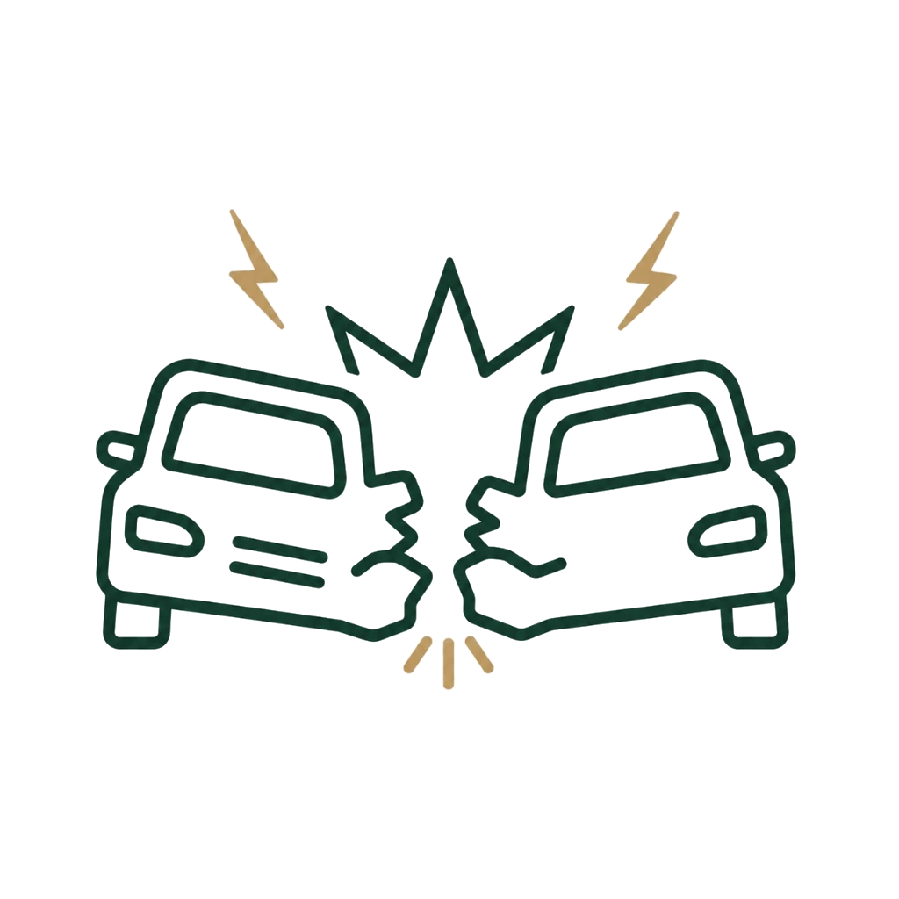

Accident Clinic
교통사고 클리닉
사고 직후 미세 손상부터 만성 후유증까지,
통증 완화와 신체 균형 회복을 함께 돕습니다.
교통사고 후유증은 통증 뿐만 아니라
당장 보이지 않는 후유증 관리도 중요합니다.
교통사고 후유증은 골절이나 외상이 없는 경우에도
신체 곳곳에 만성적인 통증과 어지럼증, 불안감 등을 유발할 수 있습니다.
사고 충격으로 인해 발생한 미세한 어혈(瘀血)과
편타성 손상(Whiplash Injury)으로 인한 척추 주변의 근육 긴장이 복합적으로 작용하기 때문입니다.
부부한의원은 통증 부위의 염증과 긴장을 완화시킴과 동시에,
신체 내부에 정체된 어혈을 배출하고 척추와 관절의 정렬을 바로잡아
후유증의 재발을 방지하고 빠른 일상 복귀를 돕는 1:1 맞춤 통합치료를 시행합니다.
주요 진료 대상 증상
목·허리 통증 및 편타성 손상
사고 충격으로 척추 주변의 인대와 근육의 안정성이 떨어지며 발생하는 목, 등, 어깨, 허리의 뻐근함과 가동 제한을 신속하게 치료합니다.
두통, 어지럼증, 구역 및 구토
경추부, 두부 충격 및 자율신경 교란으로 유발되는 만성적인 두통, 어지러움, 소화불량 및 메스꺼움 등을 가라앉힙니다.
전신 근육통 및 관절통
사고 이후 시간이 경과함에 따라 전신으로 확산되며 발생하는 팔다리 관절 부위의 원인 불명 통증 및 쑤심과 붓기를 완화합니다.
외상후 스트레스 및 심리적 불안
놀란 신경계를 안정시켜 가슴 두근거림, 불안, 무력감, 불면증 등 사고 충격으로 입은 심리적 긴장감을 부드럽게 케어합니다.
부부한의원 교통사고 치료 솔루션
침 & 도침 치료
일반 침과 더불어 필요에 따라 끝이 납작한 도침을 활용해 사고 충격으로 굳어지고 유착된 척추 주변 근막과 힘줄 조직을 미세 박리하여 통증을 효과적으로 차단합니다.
맞춤형 약침 치료
정제된 소염 한약재 성분을 추출한 약침을 손상 부위에 직접 주입하여 만성적인 염증을 빠르게 가라앉히고 통증을 신속하게 제어합니다.
추나요법 (정골·경근 치료)
충격으로 인하여 순간적으로 어긋난 척추를 한의사가 직접 교정하고, 긴장된 심부 근육과 근막을 부드럽게 이완하여 신체 정렬을 복원합니다.
어혈 배출과 기혈 순환을 위한 한약 처방
사고 충격으로 신체 내부에 맺혀 통증을 유발하는 어혈을 빠르게 배출하고, 놀란 신경을 안정시키며 기혈 순환을 돕는 1:1 맞춤 한약을 처방합니다.
교통사고 클리닉 치료 프로세스
원무과 접수 및 사고 접수번호/담당자 연락처 확인
원장님 진료를 통한 통증 상태 확인 및 후유증 진단
침, 약침, 추나, 한방 물리치료 및 필요시 한약 처방
맞춤 생활 수칙 교육 및 지속적인 추적 관찰 안내